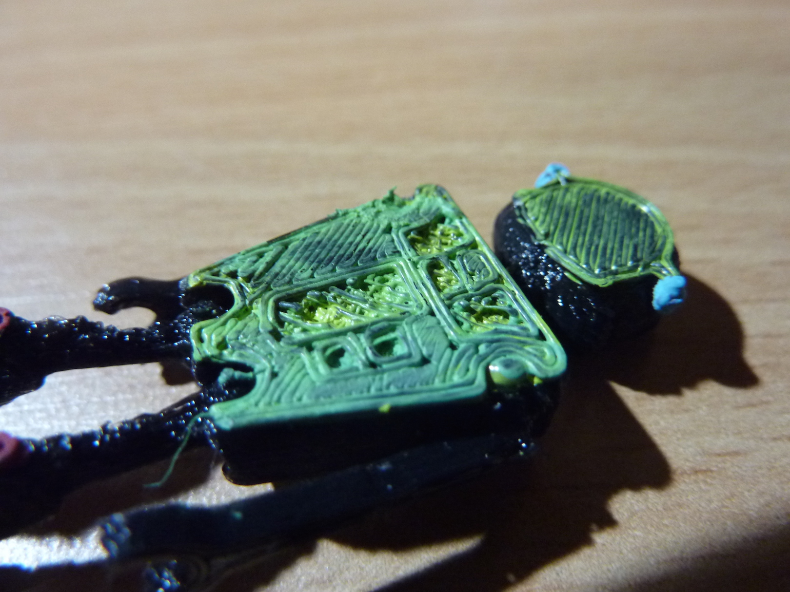
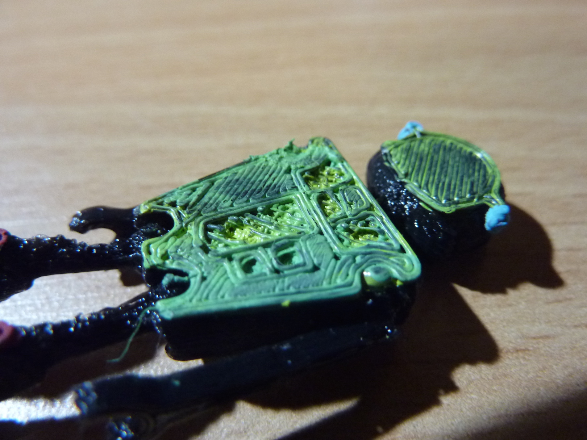

It's summer time and I find myself on Thingiverse and Instructable more than I really should. This first robot is based off the Jointed Robot by Sonia Verd. I scaled the model down by a factor of 0.4 because just wanted a quick print before I touch up on my next print model. I chose to print this as I was impressed by how the joint could all be printed as one piece. Because of the finite resolution on Ultimaker, the arm joints on the scaled-down model didn't come out as nicely as expected, but the legs were good to rotate. So I fixed the arms with hot glue gun. I've noticed in recent prints that the surface layer contains small holes that may have formed from bubbles, but I don't quite understand why this is happening (I've only seen this with PLA). So I tried patching this by coloring it with arcylic paint, and the color-picking turns out to be the funnest part. The Black PLA was a nice color when I colored the surface with arcylic since the paint that doesn't seep down to the knoches gives the robot a wire-looking appearance. This effect was totally unexpected!
3D Printed Robots
May 31, 2015
 

But I found when I was making black 3D prints yesterday that it shows up really horribly on camera (because you can't tell between the shade and the model!) Changing the material on Ultimaker2 was much easier than doing it manually on the Afinia H-series 3D printer. The Ultimaker2 first heats up the nozzle and then automatically ejects the filament. Then using this same automatic feeding mechanism I was able to easily feed the sky blue colored PLA and extrude the material out. I also noticed that the new material came out very clean and there is barely any mixing between the leftover black PLA from the nozzle with the sky blue.
This second model is my first ever CAD design from scratch, done on AutoDesk Illustrator. As I am just learning how to use this software, it is clear from the model that I had too much fun playing with the "Fillet" Option. Here is the stl file and the Inventor file. The lips didn't turn out as nicely as I expected and I scaled the drawing so that the whole model is approximately a 5cmx5cmx5cm cube. I found great use of the inner hollow region for storing laundry quarters.